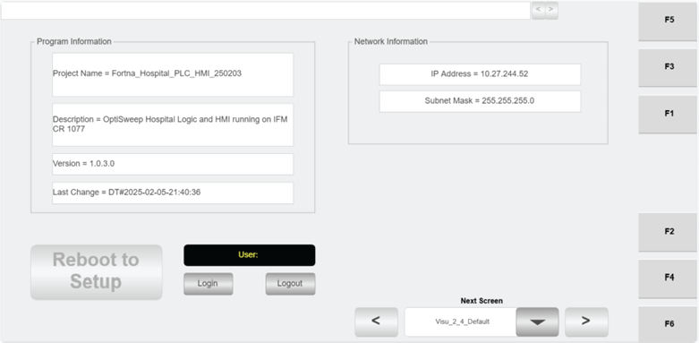
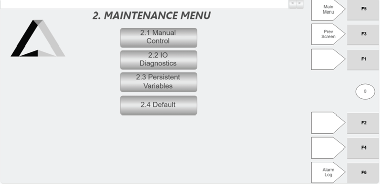

| Procedure ID | proc_use_reboot_to_setup_on_the_hospital_hmi_when_updating_hmi_date_or_time_v1 |
|---|---|
| Title | Use REBOOT TO SETUP on the Hospital HMI When Updating HMI Date or Time |
| Procedure Type | operation |
| Primary Role | L2_support |
| Support Safe | No |
| Validation Status | needs_sme_review |
| Merge Status | source_finalized |
This source-specific runbook captures the documented entry point and access restriction for using the REBOOT TO SETUP button on the Hospital HMI Default screen when an HMI date or time update is needed. The source only confirms where the control is located and that only maintenance personnel should use it; it does not provide the subsequent setup or date/time change procedure.
Use this procedure when access to REBOOT TO SETUP on the Hospital HMI is needed specifically for updating the HMI date or time, and maintenance-authorized personnel are available.
Responsible role: L2_support
Instruction:
Open the Hospital HMI "Default" screen.
Expected result:
The Hospital HMI Default screen is displayed.
Screens / Images:


Stop or Escalate If:
Responsible role: L2_support
Instruction:
Locate the REBOOT TO SETUP button on the Default screen.
Expected result:
The REBOOT TO SETUP button is identified on the Hospital HMI Default screen.
Screens / Images:
Stop or Escalate If:
Responsible role: L2_support
Instruction:
Verify that the task is limited to updating the date or time on the HMI.
Expected result:
The intended use is confirmed as an HMI date or time update.
Screens / Images:
Stop or Escalate If:
Responsible role: L2_support
Instruction:
Have only maintenance-authorized personnel use the REBOOT TO SETUP button.
Expected result:
Use of the REBOOT TO SETUP button is limited to maintenance-authorized personnel.
Screens / Images:
Stop or Escalate If:
Responsible role: L2_support
Instruction:
Record that the button was used for date or time update access, because the source does not provide the subsequent setup steps.
Expected result:
The use of REBOOT TO SETUP for date/time update access is documented, and any need for further setup steps is escalated.
Screens / Images:
Stop or Escalate If: